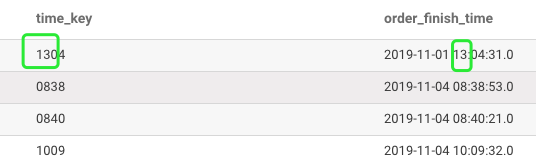
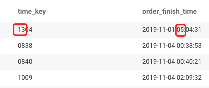
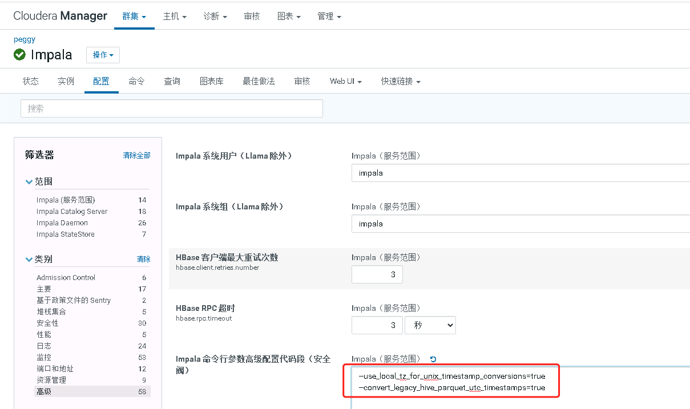

Impala TIMESTAMP 时区处理
现象
Hive 以Parquet数据存储格式写入的 TIMESTAMP字段内容，Impala读取，时间差8小时。

Hive写入

Impala读取差8小时，北京时间与UTC差8小时。
原因
Hive写Parquet数据文件，TIMESTAMP先规范化到UTC格式再存储。而Impala直接读取数据文件中的内容，不会进行TIMEZONE的调整。
When Hive writes to Parquet data files, the TIMESTAMP values are normalized to UTC from the local time zone of the host where the data was written. On the other hand, Impala does not make any time zone adjustment when it writes or reads INT96 TIMESTAMP values to Parquet files. This difference in time zone handling can cause potentially inconsistent results when Impala processes TIMESTAMP values in the Parquet files written by Hive.
https://docs.cloudera.com/documentation/enterprise/latest/topics/impala_timestamp.html
解决
impalad加入如下参数：
--use_local_tz_for_unix_timestamp_conversions=true
--convert_legacy_hive_parquet_utc_timestamps=true
CDH 配置：

重启即可生效。
Last modified on 2020-07-13